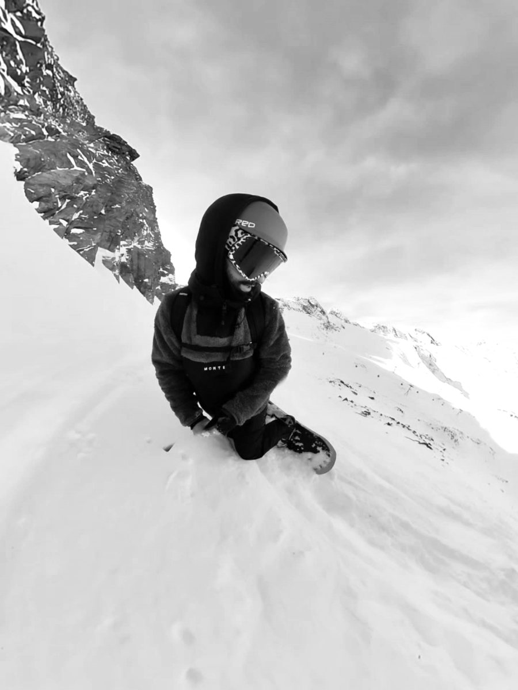

Über mich

Als Architekt und Tool Designer forsche und lehre ich seit rund sieben Jahren an der Universität Kassel zu ressourcenschonendem, digitalem Holzbau. Derzeit leite ich das DFG-Projekt Wood3Dprint, in dem ich auch promoviere. Zudem unterrichte ich Robotic Fabrication im Bachelor- und Masterstudium.
Als klassisch ausgebildeter Architekt habe ich im Bachelorstudium sowie im Büro öffentliche Bauaufgaben wie Kindergärten und Feuerwehrhäuser in den Leistungsphasen 1–4 bearbeitet, später zudem Bestandsprojekte zur Restaurierung und Umnutzung. Im Master habe ich mich dann auf Computational Design sowie robotische Fertigung mit nachwachsenden Rohstoffen spezialisiert.
Abseits von Robotern und Holz bin ich am liebsten draußen: beim Snowboarden, Surfen, Wandern oder Radfahren, oft im Van und mit Hund. Außerdem schraube ich gern an Auto und Fahrrad.
- seit 2023Projektleitung und Promotion, DFG-Projekt Wood3Dprint, Universität Kassel
- seit ca. 2019Forschung und Lehre, Universität Kassel
- 2019Master Architektur, Universität Kassel
- ca. 1 JahrISIHome, Bebra: Restaurierung und Umnutzung im Bestand
- 8 MonateStudio Bornheim, Frankfurt am Main: öffentliche Bauaufgaben, LPH 1–4
- 2017Bachelor Architektur, Universität Kassel
Skills
Fahr über einen Skill oder tipp ihn an, um mehr zu erfahren.
- Robotik und digitale Fertigung
- Computational Design
- Simulation und Analyse
- Toolbau
- Architektur und Planung
- Visualisierung und Medien
- Forschung und Lehre
- Außerdem
Publikationen
- 2026Stress-informed non-planar additive manufacturing of solid wood veneer as reinforcement for prestressed shell structuresOchs, Eversmann. Construction Robotics
- 2025Advancing additive manufacturing with renewable materials: a novel method for stress-aligned 3D printing using beech veneerOchs, Eversmann, Heise, Böhm. Architectural Intelligence
- 2024Robotically winded full scale timber prototypesGöbert, Margariti, Ochs et al., Lienhard. Automation in Construction
- 2022Robotic Wood Winding for Architectural Structures – Computational Design, Robotic Fabrication and Structural Modeling MethodsMargariti, Göbert, Ochs et al., Lienhard. Buchkapitel
- 2022An Open Approach to Robotic Prototyping for Architectural Design and ConstructionRossi, Deetman, Stefas et al., Eversmann. Buchkapitel
- 2022Additive Timber Manufacturing: A Novel, Wood-Based Filament and Its Additive Robotic Fabrication Techniques for Large-Scale, Material-Efficient ConstructionEversmann, Ochs, Heise et al., Böhm. 3D Printing and Additive Manufacturing
- 2020Additive Manufacturing with Solid Wood: Continuous robotic laying of multiple wicker filaments through micro laminationOchs, Akbar, Eversmann. Design Computation Input/Output 2020
Kontakt
Impressum
Angaben gemäß § 5 DDG
Julian Ochs
Brauweg 20
37073 Göttingen
Kontakt
E-Mail: mail@julianochs.de
Datenschutz
Diese Website erhebt selbst keine personenbezogenen Daten und setzt keine Cookies. Beim Aufruf verarbeitet der Hosting-Anbieter technisch notwendige Zugriffsdaten (z. B. IP-Adresse) in Server-Logfiles. Schriftarten werden von Google Fonts (Google, USA) geladen, dabei wird die IP-Adresse an Google übermittelt. Gehostet wird die Seite über GitHub Pages (GitHub Inc., USA).
Bildnachweise und Urheberrecht
Sofern nicht anders angegeben, stammen die Projektabbildungen vom Fachgebiet Experimentelles und Digitales Entwerfen und Konstruieren (EDEK) der Universität Kassel. Die Rechte daran liegen bei der Universität Kassel beziehungsweise bei den jeweiligen Urheberinnen und Urhebern. Die Abbildungen zum Kindergarten Elgershausen und zu den Hobbys stammen von Julian Ochs.
Alle Texte, Bilder und Zeichnungen auf dieser Website sind urheberrechtlich geschützt. Vervielfältigung, Bearbeitung oder Verbreitung, auch auszugsweise, sind nur mit vorheriger schriftlicher Zustimmung der Rechteinhaber erlaubt.
Wenn Sie auf einer Abbildung zu sehen sind und mit der Veröffentlichung nicht einverstanden sind oder Ihre Rechte verletzt sehen, genügt eine kurze Nachricht an mail@julianochs.de. Die betreffende Abbildung wird dann umgehend entfernt.